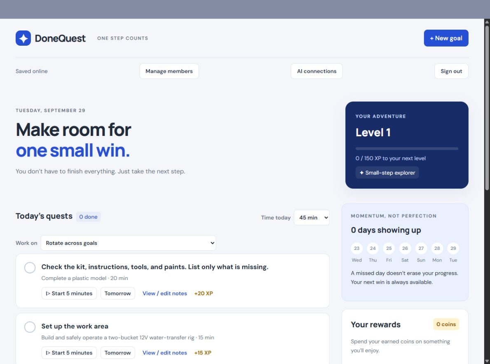
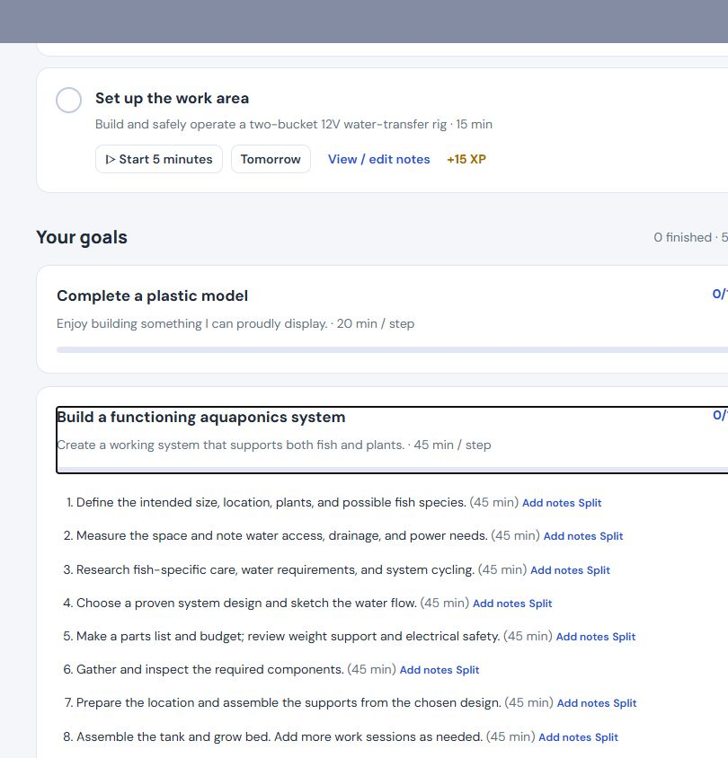

Daily planning
Create and organize goals, set a daily time budget, split oversized steps, defer work until tomorrow, and focus on a small set of next actions.
DoneQuest · Deployed web application
DoneQuest turns ambitious goals into a small number of manageable daily actions. It is built around five-minute starts, visible progress, and the belief that missing a day should not erase what a person has already accomplished.

The product idea
Ambitious goals matter to me, but a goal like “build the system,” “repair the house,” or “find a new job” does not tell me what to do with the next thirty minutes. Conventional task lists can preserve the ambition while still leaving the starting problem unsolved.
DoneQuest explores a more practical relationship between the horizon and the day in front of you. A goal becomes an ordered plan of short actions. The planner chooses a small number that fit the time available, and five minutes counts as a legitimate beginning.
The system is intentionally forgiving. Unfinished work remains available. A missed day does not reset a streak to zero. A “Where I left off” note preserves the thought that will make returning easier.
The experience
The planner turns a large intention into a repeatable loop that can survive uneven time, energy, and attention.
A goal becomes a sequence of concrete steps with expected session lengths and room to split anything still too large.
DoneQuest shows up to three next quests that fit the available time instead of presenting the entire backlog.
A lightweight focus timer lowers the commitment from finishing the task to simply getting started.
Progress, rewards, unfinished work, and private resume notes make the next session easier to enter.
What was implemented
Create and organize goals, set a daily time budget, split oversized steps, defer work until tomorrow, and focus on a small set of next actions.
XP, levels, ranks, badges, coins, personal rewards, progress bars, and “days showing up” make accumulated effort easier to see.
Invite-only accounts, account-separated plans, server persistence, optimistic revisions, conflict recovery, resume notes, and portable JSON backups support use across devices.
A manually triggered deployment workflow runs checks, restricts uploaded files, verifies the public version and health response, and preserves a recovery path.
Inside the deployed product
These views use my current goals with my permission. No passwords, tokens, invitation links, provider keys, notes, or account identifiers are shown.

What building it revealed
The important discoveries were less about adding more motivation and more about reducing the cost of beginning again.
A meaningful goal can still be paralyzing. Time budgets and a limited daily view turn ambition into a decision that can be made now.
Unfinished work is not failure. Keeping progress and context intact makes returning more useful than punishing a broken streak.
Moving from browser storage to authenticated server persistence required revisions, conflict handling, visible save state, and recovery choices.
When a save fails, dirty state remains available and the user can retry, load the server version, or export a backup rather than silently losing work.
AI without surrendering control
The deployed AI connection layer is intentionally smaller than the human interface. A user can create a private, expiring connection that reads their plan or, with stronger permission, adds a goal or tasks.
The AI cannot delete work, mark tasks complete, reopen them, spend rewards, administer accounts, or replace the entire plan. Additive writes require the current plan revision and an idempotency key, protecting both user intent and uncertain retries.
A separate text-inbox experiment goes further: capture a thought, let AI propose a structured change, inspect the exact result, then Apply or Dismiss it. That workflow and its account-owned provider credentials remain a tested draft, not a live feature.
What the evidence supports today
The public deployment marker matched repository main, and the checks and deployment run for that version succeeded. A signed-in review confirmed the current dashboard, daily planning, goal breakdown, rewards, milestones, backup controls, and online save status without changing any goal data.
Live applicationThe public site serves the deployed planner, account, backup, progress, notes, and AI-connection code.
Current checksFresh isolated JavaScript and Python checks passed; the full GitHub Actions run for the live version also passed.
Honest boundaryProduction writes, cross-device behavior, MySQL concurrency, backup restoration, and AI activation were not exercised during this review.
Deployed and draft are different claims
The capture, proposal, exact review, and Apply or Dismiss workflow passed synthetic checks on a draft branch. It has not been merged or deployed, so it appears here as a product experiment rather than an available feature.
My role and AI assistance
I defined the product problem, the planning and reward loops, the boundaries around AI authority, and the experience I wanted when someone missed a day or returned to difficult work.
I used AI coding tools extensively to help turn those decisions into application code, tests, deployment workflows, and documentation. My work has been to direct the system, challenge outputs that did not match the intent, and keep the product grounded in user agency rather than feature volume.
The result combines product design, full-stack implementation, multi-user boundaries, deployment engineering, and an evolving understanding of how AI can assist without quietly becoming the decision-maker.
What comes next
The next milestone is not another feature. It is a repeatable, privacy-safe walkthrough of the exact deployed version using a synthetic account and goals.
DoneQuest is an attempt to make ambitious work feel more possible without pretending life will become perfectly consistent. The product succeeds when it helps someone find a useful next step and makes returning feel worthwhile.